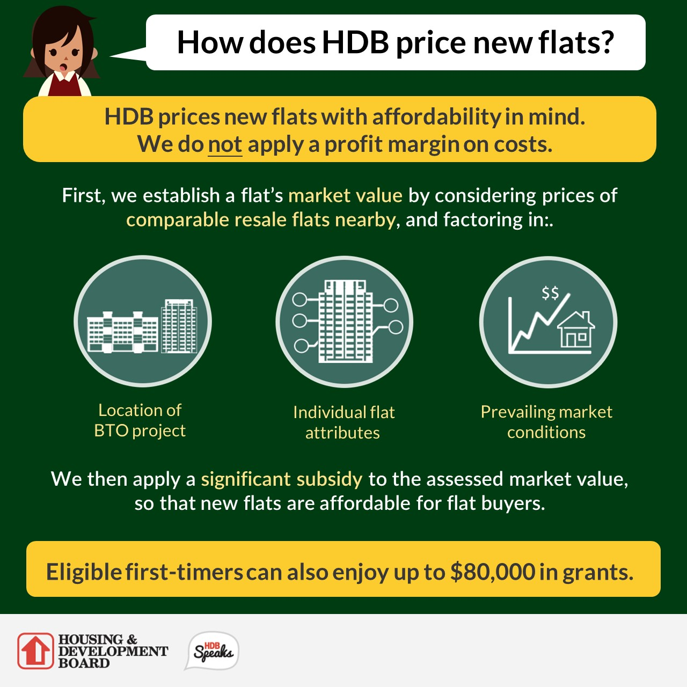

Public housing at scale
Kwok-Hao Lee* (NUS and Yale), Andrew Ferdowsian (Exeter), Yiying Tan (Princeton), Luther Yap (Princeton)
Opinions expressed herewith do not represent the views of NUS or HDB.
Created: 2023-11-15 Wed 09:50
1. Introduction
1.1. Motivation
- (Un)Affordable housing
- SF: Housing accounts for 42% of a household’s budget
- HK: 220k people live in shoebox apartments (4’ x 6’)
- SG: Median private home price — US$1.2 million
- “Too bad?”
- Motivates government intervention at scale
- Amsterdam, Vienna, Israel, Shanghai, Hong Kong…
- Today: Focus on public housing lotteries in Singapore
1.2. When governments provide public housing…
- People wait years…
- while passing on acceptable but less desirable goods
- We have prescriptions for waitlist design for the poor (Waldinger 2021)…
- But what about lotteries
- at scale (80% of residents in Singapore, 1 million apartments)
- and how do intertemporal tradeoffs matter?
1.3. Some countries with housing lotteries

1.4. In the Singapore program…
- To encourage homeownership
- the government builds (public) housing
- sold below market prices
- differentiated by location and apartment size
- possibly resold on a regulated aftermarket
- rationed by quarterly lottery over each applicant’s top choice
1.5. Research questions
- What are the effects of changing allocation rules for public housing?
- “… we manage the building programme carefully, including allocating new flats in a fair, cost-effective and efficient way.” (Mah 2011, 29)
- Current rules: Apply to 1 each period; must accept if win
- Incentivizes agents to strategically delay
- Consider alternative mechanism without this property
- What are the effects of building slightly more apartments?
- (In progress) How do these levers compare to
- The planner’s solution; and
- Allocating all public housing by price?
Examine impacts on vacancy rates, wait times, and aftermarket prices
- (In progress) welfare, affordability, sorting
1.6. Agenda
- Introduce the setting and provide descriptive analysis
- Illustrate key source of inefficiency with theoretical example
- Build dynamic choice model over lotteries for (new) public housing
- Estimate on novel data from the Singaporean mechanism
- (Today) Every new complex + agg. apps + aftermarket transactions
- (Estimation in progress) Applicant microdata
- Recover preferences for young households & owner-occupiers
- Euler CCP methods drastically simplify estimation
- Key challenge: endogenous lottery odds & aftermarket prices
- Solution: Cost instruments + Policy shocks to subsidies and OO
- Evaluate counterfactuals
- (Today) Rule changes; building more housing
- (In progress) Planner’s problem; Allocating by price; Welfare
1.7. Preview of (old) results

1. Building slightly more apartments (10%)…
- …may not alleviate congestion!
- Some agents wait longer
- Vacancies rise; aftermarket prices hardly change
- Inefficiency: Agents “hold out” for competitive developments
- Lose future lotteries? Cannot take today’s apartments
- Building more apartments can worsen this problem
2. Changing allocation rules for public housing…
- … complements increasing supply
A strategyproof mechanism eliminating intertemporal risk…
- makes poor/rich households wait 8%/23% less
- reduces vacancies (12% \( \to \) 7%)
- raises prices on the aftermarket (>12%)
- advantages owner-occupiers over applicants
- If we now build more apartments…
- Wait times remain low
- Relieves upward pressure on aftermarket prices
1.8. Literature review
- Dynamic assignment mechanisms: Budish and Cantillon (2012); Agarwal and
Somaini (2018); Arnosti and Shi (2019); Agarwal et al (2020); Verdier and
Reeling (2021); Waldinger (2021); Naik and Thakral (2021); Shi and Yin (2022);
Altmann (2023)
- Public housing + secondary market + dynamics
- “Effectiveness of \( \uparrow \) supply” (e.g., Bulow and Klemperer 1996) depends on the rules
- Neighborhood choice: Bayer, Ferreira and McMillan (2007); Galiani, Murphy
and Pantano (2015); Bayer et al (2016); Fu and Gregory (2019); Epple, Quintero
and Sieg (2020); Davis, Gregory and Hartley (2021); van Dijk (2020); Sieg and
Yoon (2020); Calder-Wang (2022); Almagro and Dominiguez-Iino (2022); Cook, Li,
and Binder (2023); Soltas (2023); Zhou (2023)
- Centralized mechanism + at-scale public housing + dynamics
- (Dynamic) Demand estimation: Rust (1987); Berry (1994); Berry, Levinsohn,
and Pakes (1995); Gowrisankaran and Rysman (2012, 2020); Gillingham et al
(2022); etc.
- Primary market clears by lottery and wait times
- Estimation leverages finite dependence (e.g., Arcidiacono and Miller 2011, 2020)
2. Setting
2.1. The Singaporean housing market

2.2. Historical context
80% of Singaporean households live in government housing
- 2021: 1.1m apartments, est. value S$440b
Build-to-order (BTO) mechanism, new government apartments (2001-today)
- S$6.3b/year (US$4.7b/year)
- Administered by the Housing and Development Board (HDB, 1960-today)
- “Sells” 99-year leases to households assigned new apartments
- Intermediates resale on (after)market
Government objective: Provide “affordable, quality public housing option”
- Encourage homeownership
- “Affordable”: \( \leq \) 4x applicant yearly income
- Minimize vacancies
- … and other objectives
2.3. Eligibility for the mechanism
Applicants apply for BTO as a family unit (typically a married couple)
- One must be a Singapore citizen; the other a citizen/PR
- Both aged \( \geq \) 21 years
- Do not own real estate in Singapore or overseas
- Income \( \leq \) S$144,000 a year (60th percentile)
Priority: Focus on “first-timers.”
- 95% of apartments in desirable neighborhoods reserved for them
2.4. Apartment types
- Unit of analysis: Housing development, (location, apartment size) pair
- Apartment types
- 3(4)-room: 2(3) bedrooms, 1 living room
- 5-room: 3 bedrooms, 1 living room, 1 dining room
2.5. Pricing

2.6. Historical context (comparison)
| Characteristic/Settings | “Singapore” (+ Israel, Brazil, …) | Waitlists |
|---|---|---|
| Lease type | Owner-occupation | Rental |
| Lease tenure | \( \geq \) 99 years | 1-2 years (renewable) |
| Lease transferable? | Yes, after min term (SGP: 5 yrs) | No |
| Applicant wealth | Low to moderate | Low |
| Transfer type | Income-specific subsidy + | Direct rent control/ |
| Discount from “resale price” | Voucher | |
| Allocation mechanism | Centralized assignment, lottery | Waitlist |
| Application cycles | Periodic (SGP: Quarterly) | Continuous (FIFO) |
| # Choices per app | 1 | > 1 |
3. Data and Descriptive Facts
3.1. Data: The universe of public housing transactions
- Mechanism (scraped): 403 developments, 900k+ apps (2010-2023)
- Application rates, prices, quantities, nearby amenities
- For now: Restrict to 195 developments over 20 periods (2012-2015)
- New revision of this paper uses Government microdata
- Secondary market (data.gov.sg): 610k transactions (2000-2023)
- Month/year transacted, location, price, year built
3.2. Location of BTO developments

3.3. Time trends in oversubscription

3.4. Oversubscription and vacancies

3.5. Time dependence

4. Theoretical example of delay
4.1. 3 households, 2 houses

4.2. Payoffs

4.3. BTO equilibrium (1)

4.4. BTO equilibrium (2)

4.5. BTO equilibrium (3)

4.6. Building more may not help! (1)

4.7. Building more may not help! (2)

4.8. Building more may not help! (3)

4.9. Building more may not help! (4)

4.10. Could we use better rules? (1)

4.11. Could we use better rules? (2)

4.12. Could we use better rules? (3)

5. Model: Outline of Public Housing Market
- New apartment supply exogenous;
- Owner-occupiers sell or not;
- Applicants enter one lottery, apply to clearinghouse, wait, or exit
5.1. Dynamic equilibrium model of housing choice
Every period, new housing developments arrive exogenously.
Existing owner-occupiers
- Infinite horizon, perfect foresight through 2023
- Given the prices they face, either
- Sell off their apartment (terminal); or
- Continue living in it
- Key trade-off: Sell today vs. sell at higher price tomorrow
5.2. Young households
- Infinite horizon, perfect foresight
- Differ by income, applicant age, family structure
- (In progress: Persistent tastes for, e.g., the west/east)
- Given prefs, prices and odds of success over developments, either
- Apply for one development within the mechanism;
- Apply to clearinghouse;
- Wait (live with family); or
- Exit to secondary market
- Key trade-off: Success odds vs. desirability
Markets clear via lottery odds (1\(^{\circ} \)) and prices (2\(^{\circ} \))
6. Model: Details
6.1. Secondary market supply equations
- Every quarter: owner-occupier decides whether to sell off her apartment
- Indirect utility from selling is \[ w_{i1lt} = \rho_0 \bar p_{lt}(S) + \xi_{1lt} + \epsilon_{i1lt} \]
- Indirect utility from staying is \[ w_{i0lt} = \delta(o) \mathbb{E}V_{ilt+1}(o) + \xi_{0lt} + \epsilon_{i0lt} \]
6.2. Secondary market shares
- Market share of sellers of type \( l \) at time \( t \) is \[ s_{1lt}(\bar{p}_{lt}(S)) = \frac{\exp[\bar w_{1lt}(\bar{p}_{lt}(S))]}{\exp[\bar w_{0lt}(\bar{p}_{lt}(S))] + \exp[\bar{w}_{1lt}(\bar{p}_{lt}(S))]} \]
- Supply of secondary market housing is \[ \mathbb{S}( p_{t}(S)) = \int s_{1lt}(\bar p_{lt}(S)) \, d\lambda_t(l), \] where \( \lambda_t(l) \) is the housing stock of type \( l \) apartments at time \( t \).
6.3. Model — Demand (Preferences)
Every period, \( M_t(\omega) \) agents of type \( \omega \) become active in the mechanism.
Specify model backwards.
6.4. Flow payoffs
- BTO apartment \( j \): \[ u_t(j; \omega) = x_{jt}'\beta(\omega) - \alpha(\omega) p_{jt}(\omega) + \gamma(\omega) \mathbb{E}V_{t'}[j; R, \omega] + \xi_{t}(j; \omega) \]
- Apartment on clearinghouse: \[ u_t(C; \omega) = -\alpha(\omega) \bar p_{t}(C; \omega) + \xi_{t}(C; \omega) \]
- Apartment on secondary market: \[ u_t(E; \omega) = -\alpha(\omega) \bar p_t(E) \]
- Payoff from remaining unmatched: \[ u_t(0; \omega) = \xi_t(W; \omega) + \delta \mathbb{E}V_{t+1}(\omega)\]
6.5. Choice-specific value functions
- BTO apartment \( j \): \[ v_{it}(j; \omega) = q_{t}(j; \omega) u_t(j; \omega) + [1-q_{t}(j; \omega)] u_t(0; \omega) + \epsilon_{it}(j; \omega) \]
- Clearinghouse: \[ v_{it}(C; \omega) = q_{t}(C; \omega) u_t(C; \omega) + [1-q_{t}(C; \omega)] u_t(0; \omega) + \epsilon_{it}(C; \omega) \]
- Apartment on secondary market: \[ v_{it}(E; \omega) = u_t(E; \omega) + \epsilon_{it}(E; \omega) \]
- Wait one period: \[ v_{it}(W; \omega) = u_t(0; \omega) + \epsilon_{it}(W; \omega). \]
6.6. Household decision problem
- If unmatched, decides optimally: \[ V_t(\omega) = \mathbb{E}\left\{\max_{d \in \mathcal{A}_t \cup \{C, E, W\}} \mathbb{E}_t[v_{it}(d; \omega) | d, \mu_t]\right\} \]
- Possible actions:
- \( d \in \mathcal{A}_t \): apply to BTO apartment \( d \)
- \( d = C \): apply to clearinghouse
- \( d = E \): take apartment on secondary market
- \( d = W \): wait one period
6.7. Market shares
- Type-specific market share of BTO apartment \( j \) at time \( t \): \[ s_{t}(j; \omega) = \frac{\exp(\bar v_{t}(j; \omega))}{\exp(\bar v_{t}(C; \omega)) + \exp(\bar v_{t}(W; \omega)) + \exp(\bar v_{t}(E; \omega)) + \sum_{k \in \mathcal{J}_t} \exp(\bar v_{t}(k; \omega))} \]
6.8. Model — Equilibrium
In equilibrium,
- [Young households apply/wait/exit optimally]
- [Owner-occupiers sell/remain optimally]
- [Success probabilities in the mechanism are consistent]
- [Sequence of secondary market prices sets demand equal to supply]
7. Estimation: Outline
7.1. Where we are headed
Want to recover…
- young household preferences and flow wait utilities (demand) and
- how likely existing homeowners move when home prices rise (supply).
Supply estimation: Brief
Secondary Market Supply: Price sensitivities recovered via IV-FE regression (Euler CCP; Kalouptsidi, Scott and Souza-Rodrigues 2021)
- Key assumption: Owner-occupier exits after selling off her apartment
- Identification: \( \Delta \) market shares and prices by apartment type over time
- Instruments: Changes to BTO subsidies (2015, 2019)
Demand estimation: Brief
Demand: Type-by-type, again exploit finite dependence (Arcidiacono and Miller 2011)
- Identification: Variation in menus + characteristics of developments
- Instruments: Changes to BTO subsidies (2015, 2019)
- Procedure: “Cancel value functions” + Recover observable coefs + Recover residuals
8. Estimation: Details
8.1. Supply estimation: Outline
Want to recover how sensitive each household’s moving decision is to changes in their apartment’s price.
- IV-FE regression over each (neighborhood, apartment size) pair (Euler CCP;
Kalouptsidi, Scott and Souza-Rodrigues 2021)
- Avoids repeatedly iterating value functions
- Endogeneity: Price correlated with unobservables
- Instruments: Demand shocks
- Expansion of eligibility for BTO (2015, 2019)
- (Q: Other supply shifters?)
- Identification: \( \Delta \) market shares and prices by apartment type over time
- Results: Elasticity of 3.64 (se: 1.59)
- Higher than new construction (1.75; Saiz 2010) and housing unit provision (0.3; Baum-Snow and Lu 2021)
Supply estimation: Hotz-Miller inversion
By a Hotz-Miller (1993) inversion, the relative attractiveness of selling vs. staying is \[ \Delta_{1,0} \ln s_{t|l} = \Delta_{1,0} \bar w_{t|l} = \rho_0 \bar p^S_{t|l} + x_{1t|l}'\rho_1 + \Delta_{1,0} \xi_{t|l} - \delta^o \mathbb{E}V^o_{t+1|l}.\]
- Selling is a terminal action (Arcidiacono and Miller 2011)
- \( \mathbb{E}V^o_{t+1|l} = \gamma^E + \rho_0 \bar p^o_{t+1|l} + x_{1t+1|l}'\rho_1 + \xi_{1t+1|l} - \ln s_{1t+1|l} \)
Identification — Dynamic Supply
- Mean resale prices \( \bar p^S_{t|l} \) possibly correlated with composite
unobservable \( \tilde \xi_{t|l} \).
- E.g. Work from home trend: agents in larger apartments less likely to vacate, driving prices up but lowering fraction of sellers
- Instrument with (demand-side) policy shocks in 08/2015, 07/2018 and 08/2019.
- The government unexpectedly
- (2015, 2019) raised subsidies + expanded eligibility for BTO
- (2018) tightened Loan-to-Value limits
- Plausibly uncorrelated with period unobservable factors that influence the probability of sale
- The government unexpectedly
Results — Dynamic Supply
res_s = reg(drf, @formula(y ~ (p_adj ~ post2015 + absd2018 + post2019) + fe(flat_type) + fe(town)), Vcov.robust(), save=:fe) IV Fixed Effect Model =============================================================== Number of obs: 4843 Degrees of freedom: 30 R2: -0.171 R2 Adjusted: -0.178 F-Stat: 5.26299 p-value: 0.022 F-Stat (First Stage): 11.9648 p-value (First Stage): 0.000 R2 within: -0.172 Iterations: 5 =============================================================== y | Estimate Std.Error t value Pr(>|t|) Lower 95% Upper 95% --------------------------------------------------------------- p_adj | 0.711783 0.310264 2.29412 0.022 0.103524 1.32004 ===============================================================
Assume discount factor of 0.96 per year
- Mean elasticity: 3.64
- Higher than new construction (1.75; Saiz 2010) and housing unit provision (0.3; Baum-Snow and Lu 2021)
8.2. Demand estimation: Outline
Applicant preferences also recovered via Euler CCP methods. Fix a type \( \omega \) and a time period \( t \); suppress subscripts.
- Take two BTO projects \( j, k \in \mathcal{J}_{t} \).
- Construct the object \[ \frac{1}{1 - q(j)} v(j) = \frac{q(j)}{1-q(j)} u(j) + u(0) \]
- Continuation value only appears in \( u(0) \)
- Take differences between \( j \) and \( k \): \[ \frac{1}{1 - q(j)} \ln s(j) - \frac{1}{1 - q(k)} \ln s(k) = \frac{q(j)}{1-q(j)} u(j) - \frac{q(k)}{1-q(k)} u(k) \]
8.3. Demand estimation: Recover preferences
\[ \frac{1}{1 - q(j)} \ln s(j) - \frac{1}{1 - q(k)} \ln s(k) = \frac{q(j)}{1-q(j)} u(j) - \frac{q(k)}{1-q(k)} u(k) \]
- Does not depend on continuation value!
- Estimate by IV regression (exploit exogenous shocks to BTO prices in
2015/2019)
- Variation: Between developments within period
- Obtain: \( \hat \beta(\omega), \hat \alpha(\omega), \hat \gamma(\omega) \)
8.4. Demand estimation: Recover structural residuals
- Exiting is terminal. Tomorrow’s value: \[ \hat V' = \gamma(E) - \hat\alpha p'(E) - \ln s'(E) \]
- Compare waiting and exiting today: \[ \ln s(W) - \ln s(E) = \xi(W) + \delta \hat V' + \hat \alpha p(E) \]
- Solve for \( \hat \xi(W) \).
- Finally, compare applying to \( j \) and exiting: \[ \ln s(j) - \ln s(E) = \text{known stuff} + q(j) \xi(j) + (1-q(j)) \left[ \hat \xi(W) + \delta \hat{V}' \right] \]
- Solve for \( \hat \xi(j) \).
Caution: Subsequent results are/use old estimates.
8.5. Full demand results
| Parameters | Estimate | S.E. |
|---|---|---|
| Constant | -2.698*** | 1.050 |
| Distance to downtown | -0.143*** | 0.0470 |
| Distance to metro stop | -0.729*** | 0.163 |
| Distance to SAP school | 0.0291 | 0.0389 |
| 4-room flat | 1.987*** | 0.305 |
| 5-room flat | 1.426*** | 0.499 |
| Price | -0.855*** | 0.291 |
| Resale price | 0.569** | 0.232 |
| Subsidized development price | -3.433** | 1.373 |
| Wait cost (Poor) | -1.972*** | 0.346 |
| Wait cost (Rich) | -2.611*** | 0.202 |
| N | 195 |
9. Counterfactuals
9.1. Overview of counterfactuals
Today: With old estimates, compare supply increase with new rules.
- Supply: 10% supply increase in oversubscribed projects
- New rules: Applicants submit preferences over (future) projects and exiting; lottery over applicants clears the market
In progress: Batching; planner’s problem; “better” pricing; welfare
- New rules: Run BTO every 6 months (Ferdowsian, Lee, and Yap 2023)
- Planner’s problem: Maximize utilitarian welfare s.t. applicants only matched to developments after they “become active”
- Pricing: BTO + \( \Delta \) prices s.t. in each development, applicant:capacity is 1:1
9.2. Changing allocation rules
Eliminate intertemporal risk through a variant of RSD!
- Given guess of aftermarket prices, all agents truthfully list their preferences over (eligible) developments and exiting
- At random, each agent assigned preferred development with capacity
In simulations, find aftermarket prices to clear the market.
9.3. Comparing counterfactual outcomes
| Outcome/CF | Baseline | Build: +10% | \( \Delta \) rules | Combined |
|---|---|---|---|---|
| Vacancies | 12% | 16% | 7% | 10% |
| Wait times | Poor: 1.5 years | \( \uparrow \)0.4% | \( \downarrow \)8% | \( \downarrow \)8% |
| Rich: 10 months | \( \downarrow \)3% | \( \downarrow \)23% | \( \downarrow \)23% | |
| Aftermarket prices | S$460k | \( \downarrow \)0.02% | \( \uparrow \)12% | \( \uparrow \)9% |
10. Conclusion
Main takeaways
- Increasing supply is not a panacea for congestion
- Demand response can eclipse the supply increase
- Better rules can improve allocation outcomes…
- but may redistribute
- Changing rules complements increasing supply!
Next steps: Welfare, Planner’s problem, Pricing
Future research: Optimal public housing location; Use lottery variation to study outcomes
Thank you! (kwokhao [at] nus [dot] edu [dot] sg)
Research agenda
Design of public housing systems
- Better rules complement raising supply (Lee et al 2023); Control over supply mix improves efficiency (Ferdowsian, Lee, and Yap 2023)
- Where should a government locate public housing and transit (Lee and Tan 2023)?
Design of transportation systems
- Consumption amenities matter for how transit expansion affects inequality (Lee and Tan 2023)
- Distributional consequences of vehicle ownership restrictions (Lee and Tsai 2023)
Design of online marketplaces
- Is Amazon self-preferencing? How merchant entry interacts with a platform’s recommender system (Lee and Musolff 2023)
- Product similarity, counterfeiting, and entry deterrence on platform marketplaces (Dou, Lee, and Li 2023)
11. Appendix
11.1. Computing Differentiation IVs
- Predict endogenous prices
- Flexible specification of instruments and exogenous variables
- For each characteristic \( k \) that is either exogenous or a predicted
price,
- Compute the isolation of development \( a \) in \( k \): \[ z_{at, kk} \triangleq \sum_{a' \in \mathcal{A}_t; a' \neq a} (x_{at, k} - x_{a't, k})^2; \]
- With another such characteristic \( k' \), their interaction: \[ z_{at,kk'} \triangleq \sum_{a' \in \mathcal{A}_t; a' \neq a} (x_{at, k} - x_{a't, k})(x_{at, k'} - x_{a't, k'}).\]
11.2. Instrument validity
- Exogeneity
- (Cost shifters + policy shock) Plausibly uncorrelated with unobserved amenities
- (DIV) Need \( \mathbb{E}[\xi_{at}|(x_{at, k} - x_{a't, k})^2_{a'}, z_{at}] = 0 \).
- Relevance
- To \( s_{at} \): Shifting \( x_{-at} \) mechanically shifts \( s_{at} \)
- To \( p_{at} \): Government passes higher costs of construction to households
- To \( p^S_{at} \): Policy shock discourages holding two properties, so lowers \( p^S_{at} \)
(In progress: Sargan-Hansen (1982) test for instrument strength)
11.3. First stage is strong
When regressing on instruments:
| Variable | F |
|---|---|
| Market shares | 20.42 |
| Sticker price | 153.19 |
| Forward resale price | 85.89 |